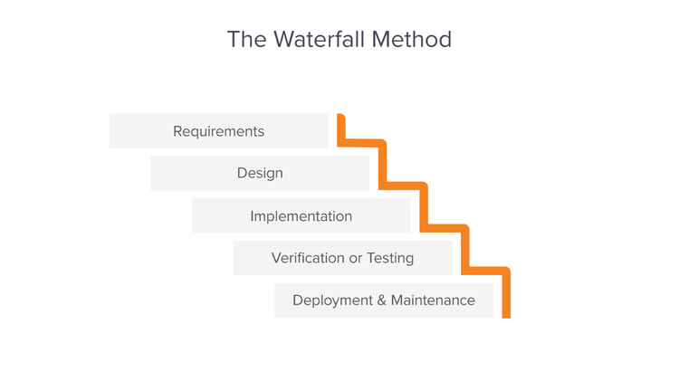
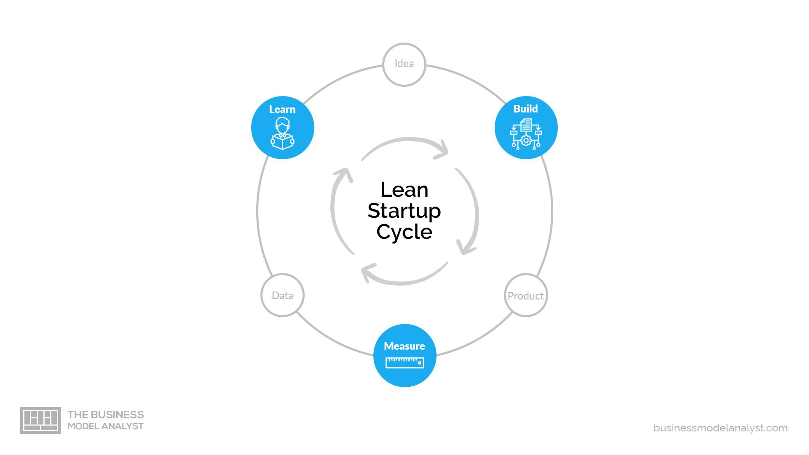

What is Digital Product?
Kartika Sari
Sept 29, 2023
19.23

238

8

Digital Product
is a goods or services that is used in digital form. Unlike physical
product that can be touched and hold, digital product can only be used
and accessed with electronic devices, such as smartphone, laptop, and
other other devices that connect with internet.
There are 3 aspect in digital product or we call it Core Product Team is..
- Business is a Product Manager
- User is a UI/UX Designer
- Tech is a Software Engineer
If that 3 aspect is balanced, we call it a Sweet Spot Area. Sweet spot area is a result from accurate research, analysis, and strategy. When you can combine customer needs with your business capabilities and appropriate technology, you will have the best chance of creating successful and sustainable digital products.
Beside core product team, there is also another team that called Support Team and that is..
- Data Analyst
- Researcher
- Product Marketing
- Tester Automation
But, that position could be different from each company (according to what is needed).
When you build a digital product, you must know about the stage of making it and type of life cycle that you want to use with your team. Let me give you a little bit insight of it ^-^
1. Product Development Stage
-
Discovery Stage
In this stage, the process is about research and analysis so that you can build features on digital product based on what is user needs. User experience designer will do this step.
- Competitor analysis
- Customer Listening
- Business Performance
- Survey Online
- Demand Planning
- Business Problem
-
Design Stage
At this step, the process is about designing the product which will be built. Capability of designing user interface is required in here so that user can use the product well, comfortable, and not confused about the flow.
- Workshop Ideation
- Lo-Fidelity Design
- Hi-Fidelity Design
- Prototyping
- Usability Testing
-
Delivery Stage
In this stage, the process is about coding the design into real product that user can use. Only a software engineer that able do this because this stage needs someone who understand how to make code eficiently and easy to maintenance.
- Development Code
- Manual Testing
- Automation Testing
- SIT (System Integration Testing)
- UAT (User Acceptance Testing)
- Product Deployment
2. Software Development Life Cycle
-
Waterfall
Developing a product in one big scope and generally. This kind of life cycle can takes months to be done because if there's mistake or problem in next step, it's hard to go back to previous step (every step must be prices).

Image by Adobe Experience Cloud Blog
-
Agile Method
Developing a product in a separated scope and phase to faster the process. Usually, these steps can be done in 2 - 4 weeks. Agile method has various processes. One of the process that mostly used is Scrum
Image by Binar
-
Lean Startup
Developing a product in form of a context, fail fast, learn fast. Because in this type of life cycle is fast paced, so this can be finished in just one week.

Image by Agile First
So, that's all I know!
I hope this simple article can give you more understanding about
Digital Product. If you have something to say, don't hesitate to
contact me through
this!
Thank you so much~~